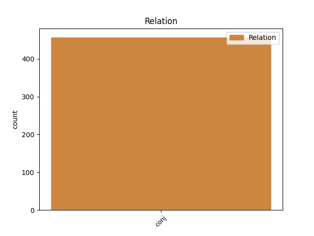
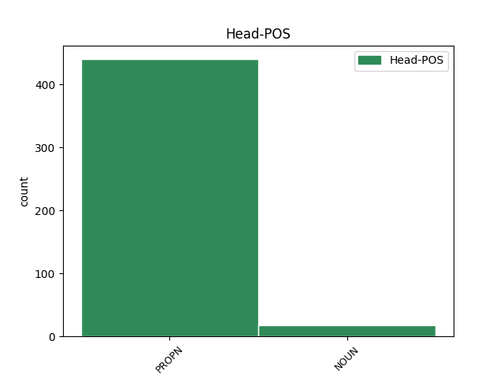
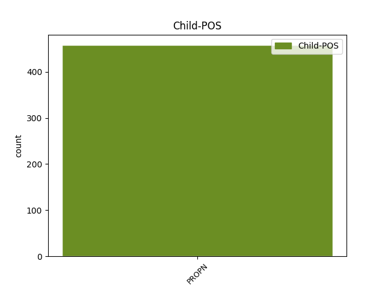

Distribution of features within this leaf



Agreement Rules sorted by frequency.
- When the dependent token is the conjunct(conj) of the head token, and the dependent token is NOUN.
1 Sus _ _ _ _ 0 _ _ _
2 Antigoon _ _ _ _ 0 _ _ _
3 - _ _ _ _ 0 _ _ _
4 Bet-bet-bet-bet-betovergrootvader bet-bet-bet-bet-betovergrootvader NOUN N|soort|ev|basis|zijd|stan Gender=Com|Number=Sing 0 _ _ _
5 van _ _ _ _ 0 _ _ _
6 Suske _ _ _ _ 0 _ _ _
7 en _ _ _ _ 0 _ _ _
8 de _ _ _ _ 0 _ _ _
9 ontdekker ontdekker NOUN N|soort|ev|basis|zijd|stan Gender=Com|Number=Sing 4 conj _ _
10 van _ _ _ _ 0 _ _ _
11 het _ _ _ _ 0 _ _ _
12 eiland _ _ _ _ 0 _ _ _
13 Amoras _ _ _ _ 0 _ _ _
14 . _ _ _ _ 0 _ _ _
Disagree Examples:
1 Klokkenmuseum _ _ _ _ 0 _ _ _
2 Huis _ _ _ _ 0 _ _ _
3 Michiels _ _ _ _ 0 _ _ _
4 : _ _ _ _ 0 _ _ _
5 museum _ _ _ _ 0 _ _ _
6 over _ _ _ _ 0 _ _ _
7 het _ _ _ _ 0 _ _ _
8 belang belang NOUN N|soort|ev|basis|onz|stan Gender=Neut|Number=Sing 0 _ _ _
9 van _ _ _ _ 0 _ _ _
10 de _ _ _ _ 0 _ _ _
11 torenuurwerken _ _ _ _ 0 _ _ _
12 en _ _ _ _ 0 _ _ _
13 de _ _ _ _ 0 _ _ _
14 geschiedenis geschiedenis NOUN N|soort|ev|basis|zijd|stan Gender=Com|Number=Sing 8 conj _ _
15 van _ _ _ _ 0 _ _ _
16 het _ _ _ _ 0 _ _ _
17 klokkengieten _ _ _ _ 0 _ _ _
18 . _ _ _ _ 0 _ _ _
1 Joods _ _ _ _ 0 _ _ _
2 Museum _ _ _ _ 0 _ _ _
3 van _ _ _ _ 0 _ _ _
4 deportatie deportatie NOUN N|soort|ev|basis|zijd|stan Gender=Com|Number=Sing 0 _ _ _
5 en _ _ _ _ 0 _ _ _
6 verzet verzet NOUN N|soort|ev|basis|onz|stan Gender=Neut|Number=Sing 4 conj _ SpaceAfter=No
7 : _ _ _ _ 0 _ _ _
8 Mooi _ _ _ _ 0 _ _ _
9 , _ _ _ _ 0 _ _ _
10 klein _ _ _ _ 0 _ _ _
11 en _ _ _ _ 0 _ _ _
12 aangrijpend _ _ _ _ 0 _ _ _
13 museum _ _ _ _ 0 _ _ _
14 over _ _ _ _ 0 _ _ _
15 de _ _ _ _ 0 _ _ _
16 deportatie _ _ _ _ 0 _ _ _
17 van _ _ _ _ 0 _ _ _
18 Joodse _ _ _ _ 0 _ _ _
19 krijgsgevangenen _ _ _ _ 0 _ _ _
20 in _ _ _ _ 0 _ _ _
21 de _ _ _ _ 0 _ _ _
22 Tweede _ _ _ _ 0 _ _ _
23 Wereldoorlog _ _ _ _ 0 _ _ _
24 vanuit _ _ _ _ 0 _ _ _
25 de _ _ _ _ 0 _ _ _
26 Dossinkazerne _ _ _ _ 0 _ _ _
27 . _ _ _ _ 0 _ _ _
1 Ze _ _ _ _ 0 _ _ _
2 worden _ _ _ _ 0 _ _ _
3 bestuurd _ _ _ _ 0 _ _ _
4 door _ _ _ _ 0 _ _ _
5 de _ _ _ _ 0 _ _ _
6 districtsraad districtsraad NOUN N|soort|ev|basis|zijd|stan Gender=Com|Number=Sing 0 _ _ _
7 en _ _ _ _ 0 _ _ _
8 het _ _ _ _ 0 _ _ _
9 districtscollege districtscollege NOUN N|soort|ev|basis|onz|stan Gender=Neut|Number=Sing 6 conj _ SpaceAfter=No
10 . _ _ _ _ 0 _ _ _
1 Door _ _ _ _ 0 _ _ _
2 het _ _ _ _ 0 _ _ _
3 samenkomen _ _ _ _ 0 _ _ _
4 van _ _ _ _ 0 _ _ _
5 grote _ _ _ _ 0 _ _ _
6 noord-zuidverbindingen _ _ _ _ 0 _ _ _
7 ( _ _ _ _ 0 _ _ _
8 van _ _ _ _ 0 _ _ _
9 Rotterdam _ _ _ _ 0 _ _ _
10 , _ _ _ _ 0 _ _ _
11 Amsterdam _ _ _ _ 0 _ _ _
12 en _ _ _ _ 0 _ _ _
13 andere _ _ _ _ 0 _ _ _
14 delen _ _ _ _ 0 _ _ _
15 van _ _ _ _ 0 _ _ _
16 Nederland _ _ _ _ 0 _ _ _
17 naar _ _ _ _ 0 _ _ _
18 Antwerpen _ _ _ _ 0 _ _ _
19 , _ _ _ _ 0 _ _ _
20 Brussel _ _ _ _ 0 _ _ _
21 en _ _ _ _ 0 _ _ _
22 Charleroi _ _ _ _ 0 _ _ _
23 en _ _ _ _ 0 _ _ _
24 verder _ _ _ _ 0 _ _ _
25 door _ _ _ _ 0 _ _ _
26 naar _ _ _ _ 0 _ _ _
27 Frankrijk _ _ _ _ 0 _ _ _
28 ) _ _ _ _ 0 _ _ _
29 en _ _ _ _ 0 _ _ _
30 belangrijke _ _ _ _ 0 _ _ _
31 oost-westverbindingen _ _ _ _ 0 _ _ _
32 ( _ _ _ _ 0 _ _ _
33 tussen _ _ _ _ 0 _ _ _
34 Duitsland Duitsland PROPN N|eigen|ev|basis|onz|stan Gender=Neut|Number=Sing 0 _ _ _
35 met _ _ _ _ 0 _ _ _
36 vooral _ _ _ _ 0 _ _ _
37 Aken _ _ _ _ 0 _ _ _
38 en _ _ _ _ 0 _ _ _
39 Keulen _ _ _ _ 0 _ _ _
40 enerzijds _ _ _ _ 0 _ _ _
41 en _ _ _ _ 0 _ _ _
42 de _ _ _ _ 0 _ _ _
43 Belgische _ _ _ _ 0 _ _ _
44 kust kust NOUN N|soort|ev|basis|zijd|stan Gender=Com|Number=Sing 34 conj _ _
45 anderzijds _ _ _ _ 0 _ _ _
46 ) _ _ _ _ 0 _ _ _
47 is _ _ _ _ 0 _ _ _
48 deze _ _ _ _ 0 _ _ _
49 Antwerpse _ _ _ _ 0 _ _ _
50 ringweg _ _ _ _ 0 _ _ _
51 één _ _ _ _ 0 _ _ _
52 van _ _ _ _ 0 _ _ _
53 de _ _ _ _ 0 _ _ _
54 meest _ _ _ _ 0 _ _ _
55 bereden _ _ _ _ 0 _ _ _
56 stukken _ _ _ _ 0 _ _ _
57 autosnelweg _ _ _ _ 0 _ _ _
58 in _ _ _ _ 0 _ _ _
59 West-Europa _ _ _ _ 0 _ _ _
60 met _ _ _ _ 0 _ _ _
61 de _ _ _ _ 0 _ _ _
62 nodige _ _ _ _ 0 _ _ _
63 verkeerschaos _ _ _ _ 0 _ _ _
64 als _ _ _ _ 0 _ _ _
65 gevolg _ _ _ _ 0 _ _ _
66 . _ _ _ _ 0 _ _ _
1 De _ _ _ _ 0 _ _ _
2 graven _ _ _ _ 0 _ _ _
3 van _ _ _ _ 0 _ _ _
4 Leuven _ _ _ _ 0 _ _ _
5 en _ _ _ _ 0 _ _ _
6 hertogen _ _ _ _ 0 _ _ _
7 van _ _ _ _ 0 _ _ _
8 Brabant _ _ _ _ 0 _ _ _
9 en _ _ _ _ 0 _ _ _
10 hunne _ _ _ _ 0 _ _ _
11 nazaten _ _ _ _ 0 _ _ _
12 maakten _ _ _ _ 0 _ _ _
13 daarvan _ _ _ _ 0 _ _ _
14 gebruik _ _ _ _ 0 _ _ _
15 door _ _ _ _ 0 _ _ _
16 hun _ _ _ _ 0 _ _ _
17 macht macht NOUN N|soort|ev|basis|zijd|stan Gender=Com|Number=Sing 0 _ _ _
18 en _ _ _ _ 0 _ _ _
19 hun _ _ _ _ 0 _ _ _
20 grondgebied grondgebied NOUN N|soort|ev|basis|onz|stan Gender=Neut|Number=Sing 17 conj _ _
21 te _ _ _ _ 0 _ _ _
22 vergroten _ _ _ _ 0 _ _ _
23 . _ _ _ _ 0 _ _ _